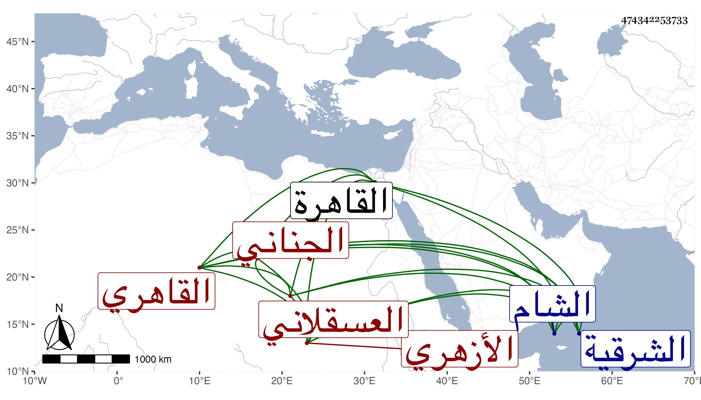

0902Sakhawi.DawLamic.ITO20230111-ara1.EIS1600.474342253733
Biography ID: 474342253733
1027
سليم ككبير بن عبد الرحمن بن سليم العسقلاني الأصل الجناني بكسر الجيم ونونين مخففا نسبة لقرية من الشرقية القاهري الأزهري لاقامته به أقام فيه ملازما للعبادة وقراءة القرآن إلى أن ظهر أمره وصار للناس فيه اعتقاد وقصد للزيارة وتأهل رزق الأولاد ، وكان لا تأخذه في الله لومة لائم بل يكلم أرباب الدولة بما فيه الخشونة وبصوته العالي ، مع بله وسلامة باطن ، وإذا سمع بمنكر من خمر أو غيره جمع فقراءه وتوجه إليه بالسلاح والمطارق فإن عورض قابلهم بمن معه فمرة ينتصر ومرة لا يتمكن وكان الأشرف يجلسه بجانبه ويصغي لكلامه ، وربما يقول له الشيخ لا تكذب علي فيضحك الأشرف ويقول له ما أكذب عليك ، وقال مرة وقت اجتماع الناس لصلاة الجمعة وقد خرج من رواق الريافة إلى صحن الجامع وبيده عصاة وهو يضرب بها على الأرض الصلاة على ابن النصرانية وكرر ذلك وعني به سعد الدين إبراهيم بن كاتب جكم فلم يقم المشار إليه إلا أياما يسيرة ثم مرض ولزم الفراش حتى مات ، وجاءه شخص فاستغفله حتى كتب خطه بالشهادة له في مكتوب ثم اطلع على تزويره فبادر إلى بعض القضاة وقال له أنا شهدت بالزور فعزرني فقال له يكفي رجوعك ولا تعزير يعني إن لم تكن متعمدا فتوجه إلى غيره فقال له أيضا كذلك فصار يستغيث منكرا على من لم يعزره ثم قال أنا أعزر نفسي وأخذ عدة نعال وعلقها في عنقه وطاف الأسواق وهو كذلك وأمر جماعة من أتباعه ينادون عليه هذا جزاء من يشهد بالزور إلى أن تعب هو وهم . وقد رأيت خطه بالشهادة على الشيخ عبد الدائم في إجازة أبي عبد القادر سنة أربع وثلاثين ، وأحواله شهيرة ، ويحكي أن شخصا من الفضلاء ضربه أو هم بضربه حيث أشار إليه بعصا فلم يرتفع رأسه بعد ذلك ، وقد دخل الشام وسلك طريقه فأراق من خمارة ما فيها وعظم البرهان إبراهيم بن عمر بن عثمان بن قرا كما أسلفته في ترجمته ، وقد ذكره شيخنا في إنبائه فقال : أحد من كان يعتقد بالقاهرة وكان شهما ، حج مرات وأرخ في الحوادث من أخباره ولم يزل على طريقته إلى أن مات بعد تمرضه مدة يسيرة في سنة أربعين ودفن بالصحراء خلف جامع طشتمر الساقي المعروف بحمص أخضر وهو ابن أربع وستين وكانت جنازته مشهودة وقبره هناك معروف يقصد بالزيارة . وله ذكر في صاحبه مهنى بن علي .
